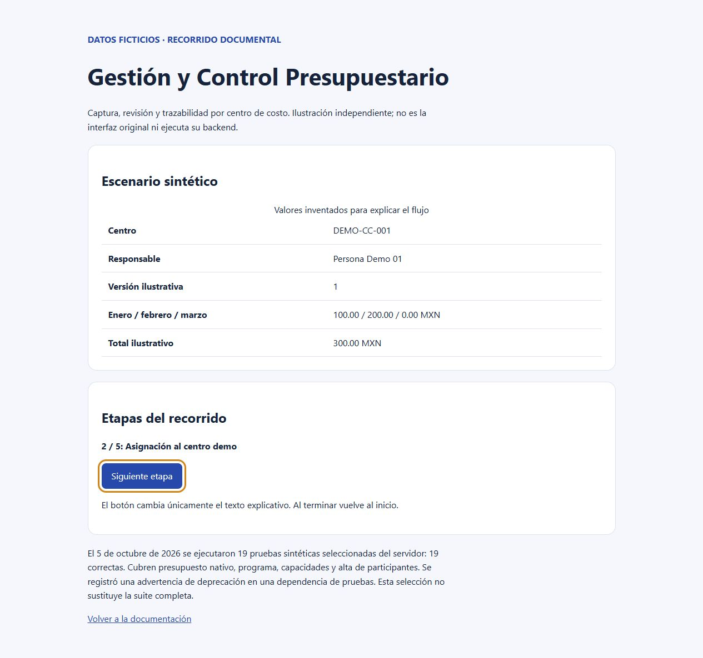

EXPERIENCIA COMPLEMENTARIA · CASO VERIFICADO
Gestión y Control Presupuestario
19 pruebas sintéticas seleccionadas de servidor correctas. Caso documental y recorrido interactivo publicados.
Problema operativo
Capturar y revisar presupuestos descentralizados por centro de costo evitando confusiones de versión y sobreescrituras.
Solución técnica
Plantillas y presupuestos nativos con ciclo formal de revisión (borrador a validación) y control de concurrencia en servidor.
Tecnologías observadas
- React
- TypeScript
- Python
- FastAPI
- SQLite
Evidencia verificable
Pruebas de presupuesto nativo, asignaciones, capacidades y participantes verificadas el 5 de octubre de 2026.

Alcance, límites y próximos pasos
La selección de pruebas no sustituye la suite completa. Validación contable y aceptación de Finanzas pendientes.
No se atribuyen métricas cuantitativas no medidas ni autoría exclusiva de componentes no acreditados. El repositorio documenta la aportación verificada y sus límites.
Ver repositorio y documentación técnica (abre en otra pestaña) ↗
Leer caso de estudio completo en GitHub (abre en otra pestaña) ↗